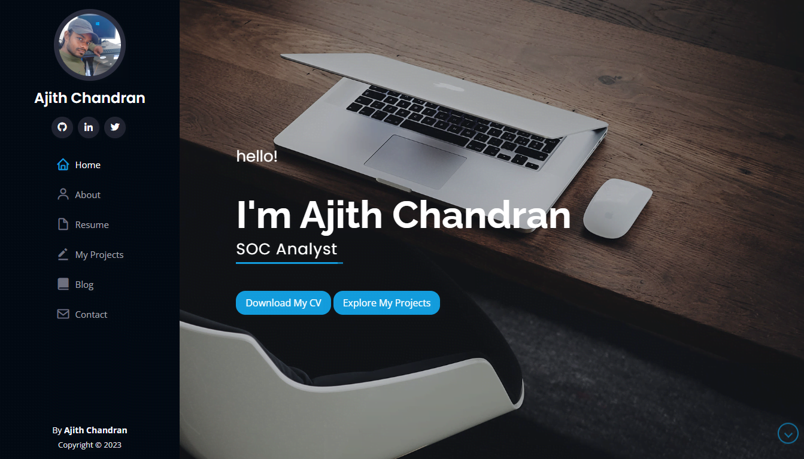

Embracing the Cyber Odyssey: My Journey from Computer Curiosity to Cybersecurity Passion
Blog information
- Title: My Journey from Computer Curiosity to Cybersecurity Passion
- Category: Lifestyle
- Date: Aug, 2023
- URL: ajithchandranr.github.io
Embarking on a Lifelong Passion
Since I can remember, I've been captivated by computers. My fascination began when I had my first interaction with a 15" LG CRT Monitor, üñ•Ô∏è
a keyboard, and a mouse at my relatives' home. It felt magical ü™Ñ ‚Äì I was hooked on computers from the age of 12. When I was 14, my uncle bought
the first computer for the purpose of email, and everything changed for me.
School was never particularly appealing to me, except for the IT and mathematics classes. My favorite part of the day was returning home after school,
taking a refreshing bath, and then sitting in front of the computer ‚Äì that's when I truly felt at "home" and at peace üè†üòå. One cherished memory
is my role as Team Lead in our IT LAB, a position bestowed upon me by friends due to my familiarity with computers.
Years flew by, school was completed, and life had its ups and downs. However, my passion for IT and computers only grew stronger.
I began assembling PCs for friends and relatives, becoming the local "PC Expert" in my area. People knew me as the go-to IT guy ü뮂Äçüíª, as
I assembled numerous PCs and troubleshooted countless hardware and software issues.
During my Higher Education, I was involved in a project that revamped the IT LAB, providing me with technical exposure to switches,
routers, and various networking equipment. This fascination deepened over the coming years.
The next phase of my education led me from hardware to software. As I pursued electronics and telecommunication engineering,
I became familiar with Linux üêß and ventured into the world of "hacking" üîí. It was mind-blowing and enthralling. I frequented hacking forums,
engaged with fellow enthusiasts, and established valuable connections. One podcast, "Darknet Diaries", truly ignited my cybersecurity passion.
Listening to episodes like 'XBox Underground' repeatedly left me astounded by the techniques, escalations, and exploitations described. Another
podcast, "Malicious Life," left a lasting impression, especially the 'John McAfee' episode.
As I continued my pursuit of cybersecurity, I decided to take CompTIA NET+ and Sec+ certifications, which I successfully completed in
just a few months through self-study. I am currently pursuing "Splunk Core and Microsoft Azure Fundamentals AZ-900". My portfolio includes
various other courses and certifications such as "Codecademy's Introduction to Linux," "Freecodecamp's Python - Full Course for Beginners,"
and "Hack the Box's CTFs," among others.
Creating the very portfolio you're reading posed a challenge. While it was built from a template, I invested effort into understanding the
code structure. In fact, constructing this portfolio proved to be an educational journey for me. Whether it involved learning HTML, CSS,
and Java coding, mastering Adobe Photoshop, utilizing various AI tools, completing projects like 'Active Directory in a Home Lab,'
demonstrating live attacks in a SIEM environment, or managing vulnerabilities with
Nessus Essentials"üõ°Ô∏è, I made full use of the limited
time I had. While it may not be flawless, the result is a portfolio that's accessible to both novices and techies.
I am currently working as a IT Support Associate on a part-time basis. In this role, I actively
engage in real-world networking tasks , contribute to troubleshooting efforts üõ†Ô∏è, and participate in network maintenance activities ‚öôÔ∏è.
This practical experience complements my ongoing learning üìö and allows me to apply theoretical knowledge to actual networking scenarios.
Throughout this journey, I encountered issues, but I navigated through them. "Amidst the pretense that often surrounds me,
I stumbled upon a perfect moment. A fleeting instant where everything feels just right. It's that rare feeling of believing
in the work I've done." I'm now aware of the challenges that may lie ahead in my cybersecurity pursuit, yet I'm fully confident
in my ability to overcome them through learning, understanding, and a willingness to seek answers to any questions. üöÄüåüü߆
Progression Timeline
Stage 1: The Beginnings (Age 12)
Captivated by computers after first interaction with a 15" LG CRT Monitor.
Stage 2: Sparking Passion (Age 14)
Uncle buys first computer for email, sparking a deeper fascination. Assembles PCs for friends and relatives, becoming the local "PC Expert."
Stage 3: Higher Education Exploration (Late Teens)
Involved in a project that revamps the IT LAB, gaining exposure to switches, routers, and networking equipment. Transition from hardware to software, exploring Linux and venturing into the world of "hacking."
Stage 4: Cybersecurity Pursuit (Ongoing Education)
Engages with hacking forums, connects with fellow enthusiasts, and gains valuable insights. Takes CompTIA NET+ and Sec+ certifications, paving the way for further learning.
Stage 5: Diving Deeper (Continued Learning)
Pursues additional courses: "Codecademy's Introduction to Linux," "Freecodecamp's Python - Full Course for Beginners," and more. Engages in Hack the Box's Capture The Flag challenges (CTFs).
Stage 6: Portfolio Building (Present)

Creates a comprehensive portfolio showcasing various projects and certifications. Acquires hands-on experience with "Active Directory in a Home Lab," "Live Attack Demonstrations in SIEM," and "Vulnerability Management with Nessus Essentials."
STAGE 7: CURRENT ROLE - IT SUPPORT ASSOCIATE
Actively engaged in real-world networking tasks, troubleshooting efforts, and network maintenance activities as a Network Assistant.
This practical experience complements ongoing learning and allows application of theoretical knowledge to actual networking
scenarios.
Stage 8: Future Aspirations
Continues to pursue cybersecurity knowledge and skills. Aims to further specialize and contribute to the field of cybersecurity.
Thank you for taking the time to read this. I can be reached on